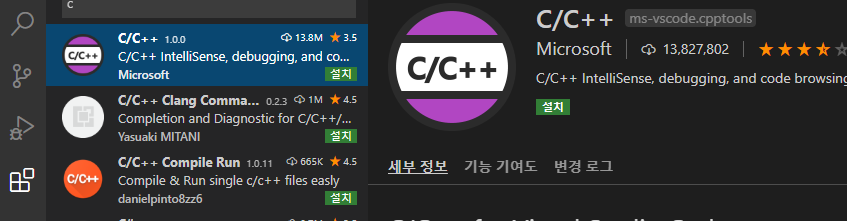
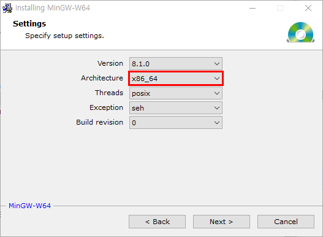
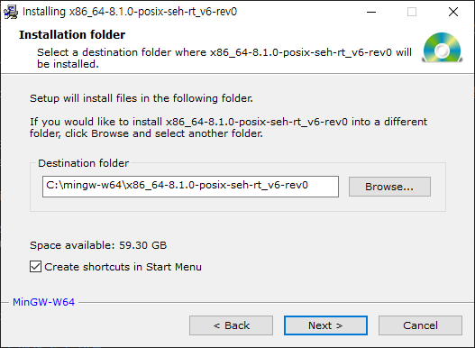
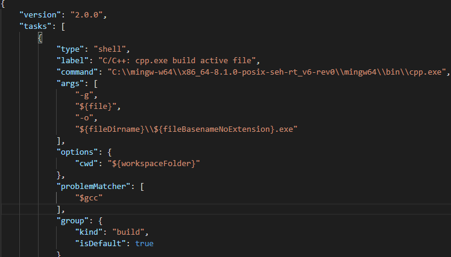
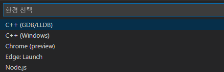
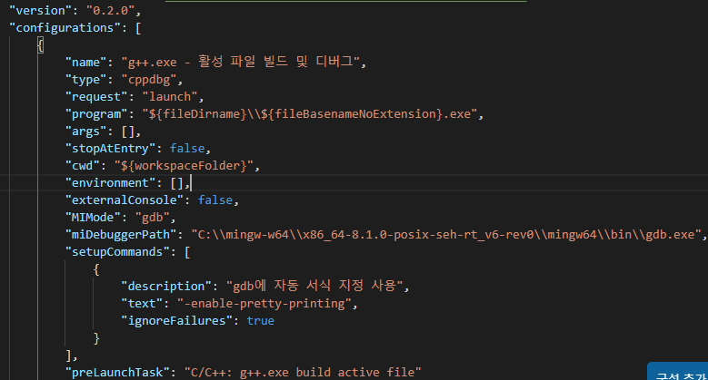
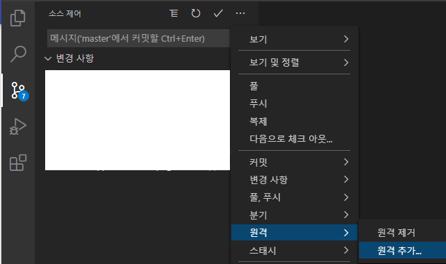

MinGW
MingGW + VS Code¶
구글 테스트를 수행하기 위해서는 사전에 필요한 것은 C++ 개발 환경이다.
Windows 운영 체제, Gnu gcc 컴파일러, Visual Studio Code 를 활용한 환경 설정에 대해서 설명한다. 참고로, Git 은 이미 설치되어 있는 상태에서 시작한다.
VS Code + MinGW 설치¶
-
Visual Studio Code 를 설치한다.
-
VS Code에서 C/C++를 사용하기 위한 확장(
extension) MinGW 64 를 차례로 설치한다.
- 그림에서 보이는 C/C++ 확장을 찾아서 설치한다.
-
MinGW 64 설치
- installer 를 다운받아서 실행한다.

- Architecture 를 x86_64 로 선택한다.

- 설치 폴더를 설정하고 설치한다.
-
MSYS2 pachage 설치
-
MinGW-64 의
bin폴더, msys2 의bin폴더를PATH환경 변수에 추가한다.- 예>
C:\mingw-w64\x86_64-8.1.0-posix-seh-rt_v6-rev0\mingw64\bin - MinGW 가 정상적으로 설치 되었음을 명령프롬프트 창에서 확인한다.
g++ --version gdb --version - 예>
코드 작성, 빌드, 실행¶
- 명령창에서 다음과 같이 폴더를 생성하고 VS Code 를 실행시킨다.
mkdir projects
cd projects
mkdir helloworld
cd helloworld
code .
-
작업영역 내의
.vscode폴더에 다음 3 개의 파일을 생성할것이다.- tasks.json : 빌드 명령들
- launch.json : 디버거 설정들
- c_cpp_properties.json : 컴파일러 경로(compiler path) 와 인텔리센스(IntelliSense) 설정들
-
C++ 예제 파일(
helloworld.cpp)을 생성하고 코드를 작성한다. -
tasks.json 파일을 생성해서 VS code 에게 빌드에 필요한 정보를 제공해야 한다.
- 터미널(T) -> 기본 빌드 작업 구성 메뉴를 선택하면 사전에 정의된 C++ 컴파일러들을 드롭다운 리스트로 보여준다.
-
g++.exe build active file 을 선택하면
tasks.json파일이.vscode폴더에 생성되고, 편집창에 오픈된다.
args가 g++ 에 전달되는 명령라인 인자들이다.- g++ 은
${file}을 컴파일하고, 실행파일을${fileDirname}폴더에 생성한다. 실행파일은$fileBasenameNoExtension}.exe
Variable Reference
참고
group의"isDefulat": True가 기본 빌드 작업을 의미한다.- 여러개의 소스 파일을 컴파일하려면
${file}을"${workspaceFolder}\\*.cpp"로 수정한다.
디버깅¶
-
F5 를 눌러서 GDB 디버거를 시작하려면
launch.json파일을 생성한다. -
실행 -> 구성추가 를 선택하고, C++ (GDB/LLDB) 를 선택한다.

-
드롭다운 리스트에서 g++.exe - 활성 파일 빌드 및 디버그 을 선택한다.
-
VS code가
launch.json파일을 생성한다.

stopAtEntry를true로 설정하면 디버거가 main 함수를 시작할 때 멈춘다.
VS Code에서 Git 연동¶
- VS Code 와 Git 을 연동하려면 Git 을 설치해야 한다.
-
Git 계정 정복를 설정한다. 윈도우 자격증명을 사용할 수도 있다.
git config --global user.name username
git config --global user.email user@email.mail
- Github 리포지터리 연동: 소스제어-> ... -> 원격 -> 원격추가
